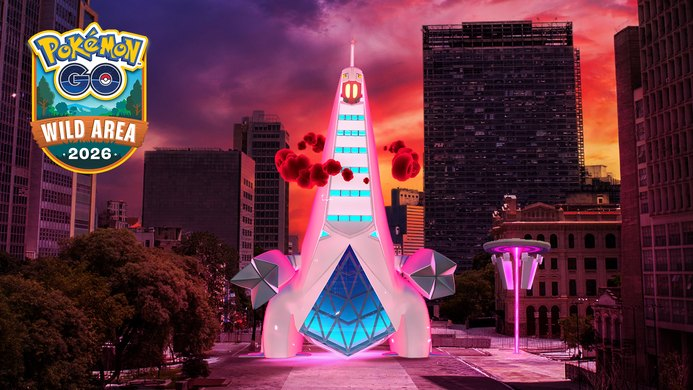
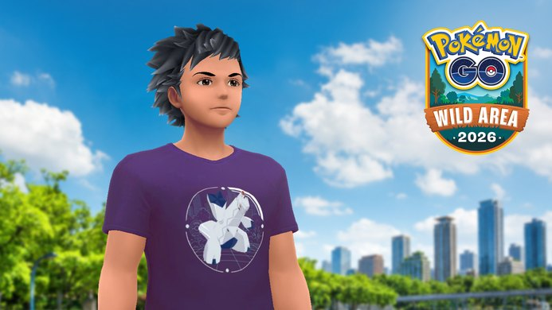

포켓몬고 얻는법 와일드 에리어 스페셜리서치 강철·드래곤 메달 2종
토요일 아침 10시에 맞춰 포켓몬 GO를 켜실 분들이라면, 이번 와일드 에리어 글로벌에서 스페셜리서치부터 눈에 들어오실 텐데요. 이번 이벤트 핵심은 세 가지예요. 글로벌 이벤트 티켓으로 스페셜리서치를 열고, 강철 경로나 드래곤 경로를 고른 다음, 메달을 받아 보너스를 켜는 거죠. 시간은 14일(토)·15일(일) 이틀, 매일 한국시간 10:00부터 18:00까지예요.
이벤트가 아직 시작 전이라 후기가 아니라 11월 10일 기준으로 공식 안내를 차례대로 정리한 글이에요. 판매 기간처럼 아직 공개되지 않은 부분은 따로 짚어 뒀답니다.

와일드 에리어 2026 공식 이미지예요. 로고와 함께 거다이맥스 두랄루돈이 그려져 있어요.
출처: 포켓몬 GO 공식 공지 pokemongo.com · 네이버 본문엔 받아서 재업로드 권장
글로벌 스페셜리서치는 언제 열리고, 티켓은 얼마에 어디서 사나요?
글로벌 이벤트 티켓은 포켓몬 GO 웹스토어에서 $11.99에 팔고, 글로벌 스페셜리서치는 이 티켓을 가진 분만 할 수 있어요.
이벤트 이름은 'Pokémon GO 와일드 에리어: 글로벌'이고, 한국시간 11월 14일(토)·15일(일) 매일 10:00~18:00에 열려요. $11.99는 공식 페이지 표기라서 원화로 얼마가 결제되는지는 웹스토어 화면에서 확인해 보세요.
하루 8시간씩 이틀이라 생각보다 짧네요. 그래서 티켓은 시작 전에 사 두는 게 마음 편하겠죠? 다만 티켓을 언제까지 파는지는 공식 안내에 아직 안 나왔어요.
티켓을 가진 분께는 전용 스페셜리서치 말고도 각 날짜의 현지시간 10:00~18:00 동안 보너스가 붙는데요, 색이 다른 포켓몬을 만날 확률 증가, 포켓몬을 잡을 때 받는 사탕 2배, 향로 지속 시간 2배, 체육관 포토디스크로 얻는 무료 레이드패스 하루 최대 6개(티켓이 없으면 3개)가 대표적이에요. 티켓을 산다고 색이 다른 포켓몬을 반드시 만나는 건 아니라고 해요.
스틸 스페셜리스트 메달과 드래곤 디펜더 메달, 보너스는 뭐가 다른가요?
스틸 스페셜리스트 메달은 강철 경로, 드래곤 디펜더 메달은 드래곤 경로에서 받는 메달이고, 두 메달의 보너스는 사탕XL 1개와 별의모래 1,000개로 같은 구조예요.
글로벌 스페셜리서치는 분기형 스토리라서, 강철 타입 포켓몬을 조사하는 경로와 드래곤 타입 포켓몬을 조사하는 경로 중에서 하나를 고르게 돼요. 공식 안내에도 선택에 따라 리워드와 보너스가 정해지니 신중하게 고르라고 적혀 있어요.
| 구분 | 강철 경로 | 드래곤 경로 |
|---|---|---|
| 조사하는 타입 | 강철 | 드래곤 |
| 받는 메달 | 스틸 스페셜리스트 메달 | 드래곤 디펜더 메달 |
| 보너스가 붙는 포켓몬 | 강철 타입의 강한 포켓몬 | 드래곤 타입의 강한 포켓몬 |
| 보너스 내용 | 포켓몬의 사탕XL 1개(트레이너 레벨 31 이상) + 별의모래 1,000개 | |
사탕XL 쪽에 '트레이너 레벨 31 이상'이라는 조건이 붙어 있으니, 레벨이 30 이하인 분들은 이 줄을 눈여겨보세요. 공식 안내에는 이 보너스가 타입별 메달을 받을 때 켜진다고 해요.
11월 6~8일 센다이·멕시코시티 현장 이벤트에 참가한 분들은 두 타입 메달을 모두 모을 수 있었고 그 보너스가 글로벌 종료까지 이어진다고 하는데요, 글로벌 티켓의 스페셜리서치는 메달 두 가지 중 하나를 받는 방식이라 성격이 달라요.
'강한 포켓몬'은 야생에서 만나는 평소보다 강한 상대예요. 공격, 방어, HP가 높을 수 있고 XL 또는 XXL일 수 있으며 잡기가 더 어렵지만, 이벤트에서 쓸 수 있는 GO사파리볼로 잡을 확률이 매우 높아진다고 해요. 야생 말고 향로(산책향로 제외)와 루트에서도 만날 수 있고, 날짜마다 나오는 명단이 달라요.
- 11월 14일(토): 나시(알로라의 모습), 핫삼, 플라이곤, 씨카이저, 메타그로스, 엠페르트, 자포코일, 노보청, 액스라이즈
- 11월 15일(일): 마릴리, 킹드라, 보스로라, 너트령, 삼삼드래, 미끄래곤, 음번, 두드리짱, 토오
다만 명단 18종이 전부 보너스 대상은 아니에요. 씨카이저·노보청(토), 마릴리·토오(일)는 강철도 드래곤도 아니라서 어느 경로를 골라도 메달 보너스가 붙지 않아요. 나머지는 도감에서 타입을 확인해 보고 경로를 고르면 훨씬 덜 헷갈리겠죠? 티켓을 가진 분이 향로를 쓰면 강한 라티아스와 강한 라티오스도 이끌려 나온다고 하니, 두 포켓몬을 노린다면 GO사파리볼을 넉넉히 챙겨 두세요.
메달 보너스를 놓치지 않으려면 어떤 순서로 움직이나요?
메달 보너스를 놓치지 않으려면 11월 14일 10시에 스페셜리서치를 시작해 메달부터 받고, 메달 타입에 맞는 강한 포켓몬을 잡으면 돼요.
- 이벤트 전에 웹스토어에서 글로벌 이벤트 티켓을 준비해요.
- 11월 14일(토) 10시 이후 스페셜리서치를 열고 강철 경로나 드래곤 경로를 골라요.
- 스틸 스페셜리스트 메달 또는 드래곤 디펜더 메달을 받아요. 보너스는 이 메달을 받을 때 켜진대요.
- 메달 타입에 맞는 강한 포켓몬을 잡으면 사탕XL(레벨 31 이상)과 별의모래가 추가로 들어와요.
- 메달 보너스는 11월 15일(일) 18:00에 끝나요.
이벤트 시간이 하루 8시간씩이라, 14일 10시에 바로 접속할 수 있다면 메달부터 받아 두세요. 14일을 놓치면 15일 10~18시 8시간만 남는다는 점도 기억해 두시고요.
저라면 토요일 오전에 티켓과 경로부터 정해 두겠어요 ㅎㅎ 그날 나오는 강한 포켓몬 명단에 노리는 이름이 있는지 보고 고르면 후회가 적을 것 같거든요.
티켓 말고 같이 받을 수 있는 건 뭐가 있나요?
글로벌 스페셜리서치를 마치면 새 트레이너 포즈와 스페셜 배경이 있는 거다이맥스 두랄루돈과의 만남을 받고, 티켓과 따로 GO패스에서 퍼플 티셔츠와 두랄루돈 하의 같은 보상을 챙길 수 있어요.
스페셜리서치를 완료한 티켓 소지자에게는 현장이든 글로벌이든 새 트레이너 포즈가 주어지고, 스페셜 배경이 있는 거다이맥스 두랄루돈도 만날 수 있어요.
GO패스의 정식 이름은 'GO패스: 와일드 위크'이고, 한국시간 11월 9일 10시부터 11월 15일 18시까지 진행돼요. 보상 수령은 11월 17일 23시 59분까지예요. 무료 트랙은 'GO 와일드 에리어2026 티셔츠(퍼플)', 유료 GO패스 디럭스는 여기에 두랄루돈 하의가 더해져요.
두랄루돈 머리장식, 거다이맥스 두랄루돈 백팩, 격투타입 재킷은 이벤트 중 게임 내 숍에 나오고, 이벤트가 끝난 뒤에도 살 수 있다고 안내돼 있어요.

퍼플 색 티셔츠를 입은 아바타 공식 이미지예요. GO패스 무료 보상이 퍼플 티셔츠라고 안내돼 있어요.
출처: 포켓몬 GO 공식 공지 pokemongo.com · 네이버 본문엔 받아서 재업로드 권장
GO패스는 티켓과 상관없이 돌아가는 보상이라서, 이 글의 메달 보너스와는 따로 계산하시면 돼요.
자주 묻는 질문
Q. 현장 이벤트와 같은 건가요?
아니에요. 글로벌은 전 세계 어디서든 즐기는 이벤트고, 현장 이벤트는 그 장소에서 열리는 행사예요. 한국에서는 수원에서 현장 이벤트가 따로 열린다고 해요(인벤 기사). 현장 이벤트에 참가한 분도 글로벌 티켓을 사면 이 스페셜리서치를 받을 수 있다고 공식 안내에 나와 있어요.
Q. 메달에 동·은·금 같은 단계가 있나요?
경로마다 메달이 하나씩이에요.
와일드 에리어 글로벌 스페셜리서치 정리
티켓 하나로 스페셜리서치와 메달, 명단이 정해져 있는 강한 포켓몬까지 이어지는 이벤트라서, 어느 날 어떤 포켓몬을 잡고 싶은지부터 정하고 티켓을 사도 늦지 않을 것 같아요. 판매 기간처럼 아직 안 나온 부분은 공식 페이지에서 한 번 더 확인해 보세요~
✔ 포켓몬 GO 같이 보기 좋은 내용
· 포켓몬고 은색병뚜껑 대단한 특훈, HP 공격 방어 뭘 고를까
· 포켓몬고 무한다이노 맥스배틀 11월 21일 11시~14시 사탕 파밍 동선
· 포켓몬고 와일드 위크 리모트 레이드 30회, 11월 9일 자시안·11월 10일 자마젠타 에너지 챙기는 순서
참고한 곳 (2026.11.10 기준)
· 포켓몬 GO 와일드 에리어: 글로벌 공식 페이지(티켓 가격·강한 포켓몬)
· 포켓몬 GO 공식 공지 — 와일드 에리어 글로벌 준비
· 포켓몬 GO 와일드 에리어 공식 페이지